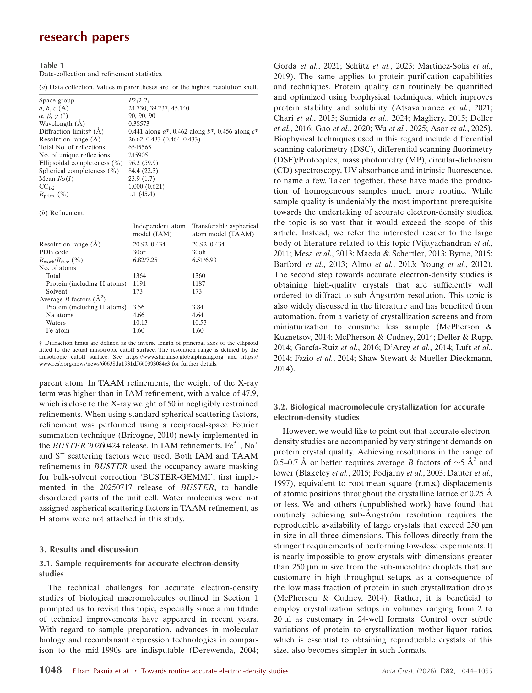
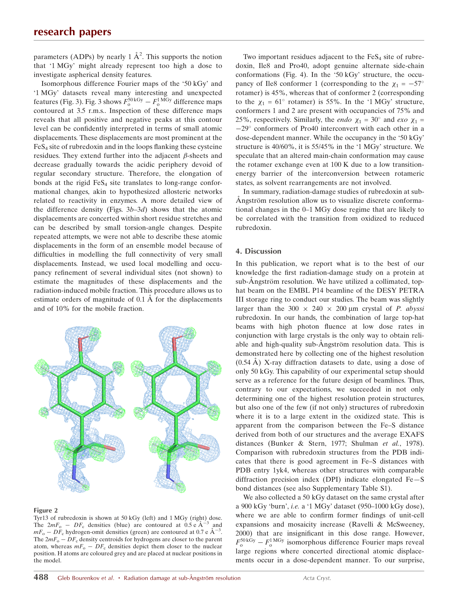
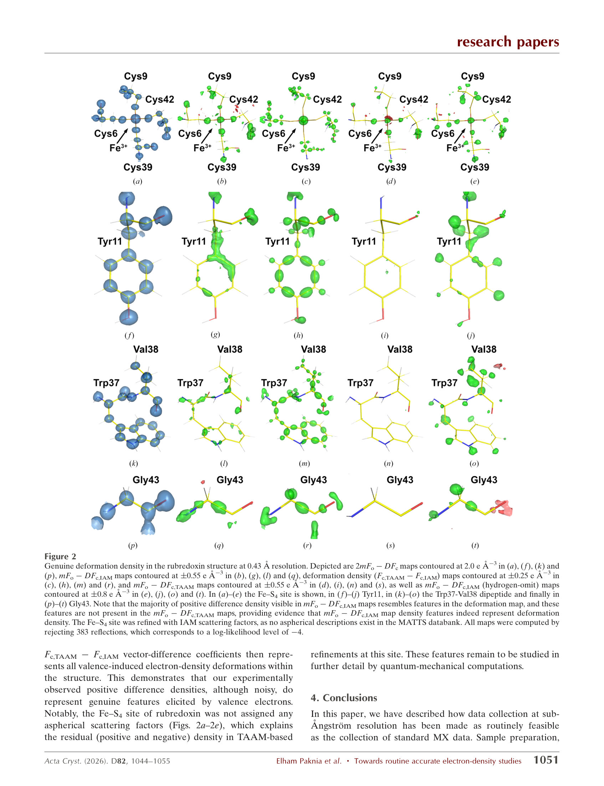
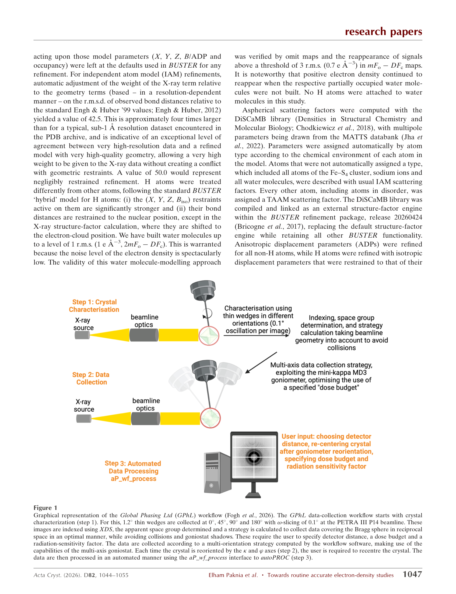
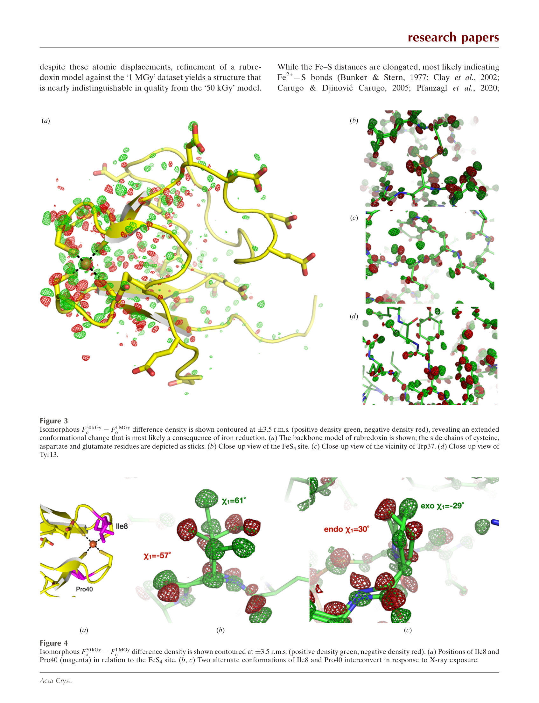
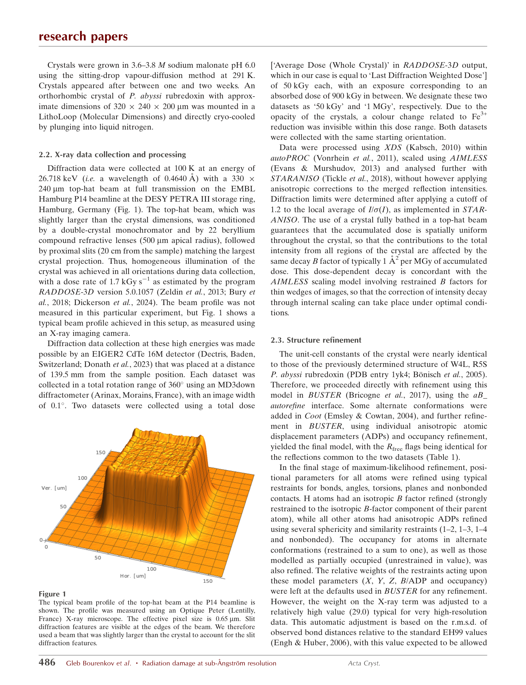

Based on Bourenkov et al. 2026 & Paknia et al. 2026 (Acta Cryst. D82)
All collected at 100 K on EMBL P14 beamline (DESY PETRA III) with top-hat beams.
| Dataset | Paper | Dose | Resolution | Unique Refl. | Rwork/Rfree | Avg B (Ų) | Compl. (%) |
|---|---|---|---|---|---|---|---|
| 50 kGy | Bourenkov | 50 kGy | 0.545 Å | 117,913 | 7.63/8.51% | 4.48 | 94.2 |
| 1 MGy | Bourenkov | 1000 kGy | 0.567 Å | 96,302 | 7.57/8.41% | 5.32 | 94.1 |
| 500 kGy | Paknia | 500 kGy | 0.433 Å | 245,905 | 6.82/7.25% | 3.56 | 96.2 |
Source: results/values.csv — all 30 rows pass check_values.py

The Fe–S bond lengths in the FeS₄ cluster reveal dose-dependent reduction:
Bourenkov p.1: "Oxidized (Fe³⁺) state preserved to a large degree at 50 kGy, whereas at 1 MGy partially reduced to Fe²⁺"
Isomorphous difference maps show extensive conformational changes at 1 MGy coupled to Fe reduction.

F50kGy–F1MGy difference maps reveal conformational changes (Bourenkov Fig. 3)
Deformation density (bonding electrons) typically requires < 0.5–0.7 Å resolution (Afonine 2004, Jelsch 2000, Guillot 2008, cited in Paknia p.2).
| Dataset | Resolution | Verdict |
|---|---|---|
| 500 kGy | 0.433 Å | ✓ Well within range — highest protein resolution ever |
| 50 kGy | 0.545 Å | ⚠ Borderline — Fourier termination effects mask aspherical features |
| 1 MGy | 0.567 Å | ⚠ Borderline — same limitation + radiation damage |
Bourenkov p.4: "Termination effects expected at 0.4–0.6 Å… known to mask aspherical density features"

Deformation density (Fc,TAAM–Fc,IAM) maps at 0.43 Å (Paknia Fig. 2)
Paknia p.1: "TAAM refinements resolve all positive density features in midpoints of chemical bonds"

Global Phasing Ltd automated workflow (Paknia Fig. 1)

Dose-dependent rotamer interconversion at Ile8 & Pro40 (Bourenkov Fig. 4)
| Hypothesis | Result | Evidence |
|---|---|---|
| H1: Resolution is primary factor for Hirshfeld suitability | SUPPORTED | 0.433 Å enables TAAM; 0.55 Å borderline with termination effects |
| H2: Lower dose (50 kGy) better — preserves true electronic structure | NOT SUPPORTED | Resolution too low for deformation density despite Fe³⁺ preservation |
| H3: 1 MGy worst due to radiation damage | SUPPORTED | Highest B, fewest reflections, lowest res, Fe reduction, conformational changes |
One literature search performed: "Hirshfeld atom refinement sub-angstrom macromolecular crystallography" (results in results/refs.bib).

Uniform top-hat beam enables "resolution in dose" (Bourenkov Fig. 1)
0.43 Å deformation density reveals bonding electrons (Paknia Fig. 2)